Image generation today can produce somewhat realistic images from text prompts. However, if one asks the generator to synthesize a particular camera setting such as creating different fields of view using a 24mm lens versus a 70mm lens, the generator will not be able to interpret and generate scene-consistent images. This limitation not only hinders the adoption of generative tools in photography applications but also exemplifies a broader issue of bridging the gap between the data-driven models and the physical world. In this paper, we introduce the concept of Generative Photography, a framework designed to control camera intrinsic settings during content generation. The core innovation of this work are the concepts of Dimensionality Lifting and Contrastive Camera Learning, which achieve continuous and consistent transitions for different camera settings. Experimental results show that our method produces significantly more scene-consistent photorealistic images than state-of-the-art models such as Stable Diffusion 3 and FLUX.
Current state-of-the-art text-to-image generation models like Stable Diffusion 3 (SD3) and FLUX face two major limitations: the inability to accurately interpret camera-specific settings and the challenge of maintaining consistency in the base scene (pls see below examples). This work introduces a novel approach that addresses these issues, enabling precise camera setting control and consistent scenes in generative models.
| Type | Bokeh Rendering | Focal Length | Shutter Speed | Color Temperature |
| Prompts | "... desserts; with bokeh blur parameter [2, 6, 10, 14, 18]." | "... office; with [45, 40, 35, 30, 25]mm lens." | "... kitchen; with shutter speed [0.2, 0.36, 0.46, 0.66, 0.85] second." | "... living room; with temperature [3200, 3050, 3700, 4500, 9500] kelvin." |
| Generated by SD3/FLUX | 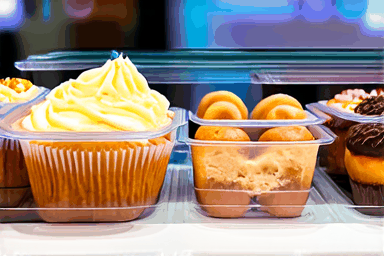 | 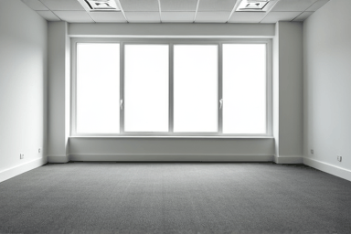 |  |
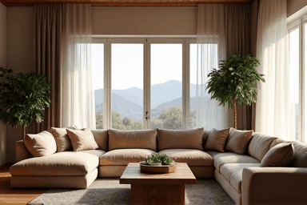 |
| Ours |  |
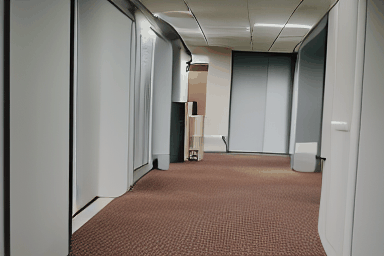 |  |
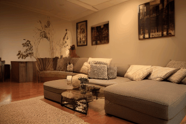 |
Generative photography is a new paradigm in photography where content is generated instead of captured. On top of an existing text-to-image generation process, we demand the model to comprehend the typical camera settings: adjusting the aperture, shutter speed, focal length, and color temperature. A successful generative photography method should satisfy three objectives: (1) the camera effects are realistically rendered; (2) by changing the camera settings, the content of the scene is not altered, e.g., the buildings remain the same buildings and persons remain the same persons; (3) adding camera awareness does not degrade the image quality when compared to the baseline models that do not possess this property.
Our high-level idea consists of two main points:
We construct contrastive data for the same scene using the approach illustrated above. Contrastive data is advantageous as it enables models to focus on and learn from the differences between images, rather than being overwhelmed by the vast diversity of real-world data.
We showcase visual results generated by different methods on camera bokeh rendering, focal length, shutter speed and color temperature control. Both Stable Diffusion 3 (SD3) and FLUX generate images with fixed random seed. Both AnimateDiff and CameraCtrl have been fine-tuned/trained on our contrastive data.
| Type | Bokeh Rendering | Focal Length | Shutter Speed | Color Temperature |
| Prompts | "A horse with a white face stands in a grassy field, looking at the camera; with bokeh blur parameter [28.0, 14.0, 10.0, 6.0, 2.0]." | "A beautiful garden filled with red roses and green leaves ; with [24.9, 36.9, 48.9, 60.9, 69.9]mm lens." | "A blue pot with a plant in it is placed on a window sill, surrounded by other potted plants; with shutter speed [0.88, 0.68, 0.48, 0.38, 0.28] second." | "A collection of trash cans and a potted plant are seen in the image. The trash cans are individually in blue, black and yellow; with temperature [3100.0, 4000.0, 8000.0, 7000.0, 3000.0] kelvin." |
| SD3 | 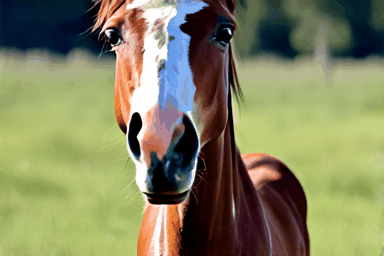 | 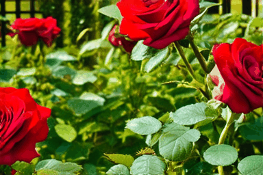 | 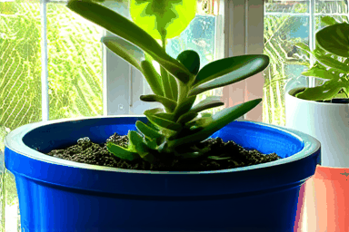 | 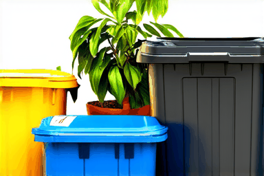 |
| FLUX |  |
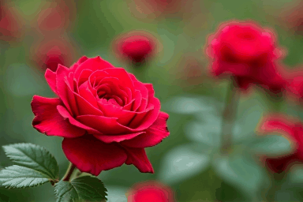 | 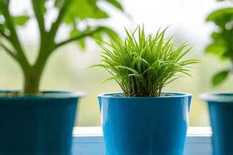 | 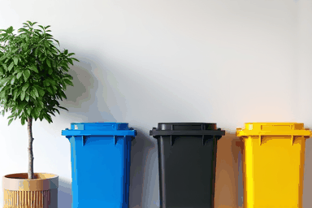 |
| AnimateDiff |  |
 |
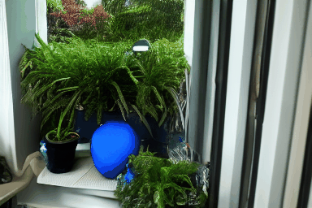 |  |
| CameraCtrl | 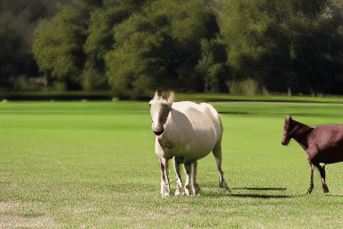 | 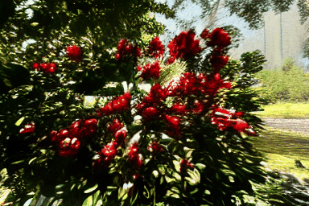 | 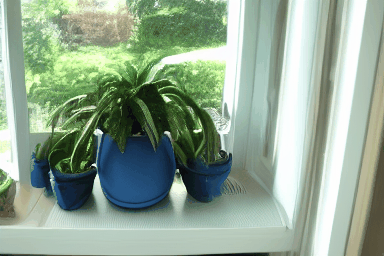 | 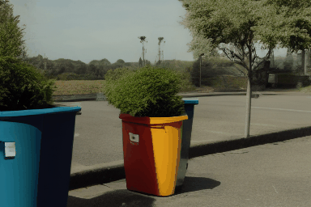 |
| Ours | 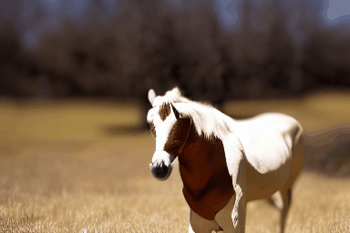 |  |
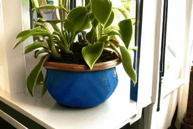 |  |
We show more camera-controlled videos generated by our method.
| Bokeh Rendering |  |
 |
 |
| Prompts |
| Focal Length |  |
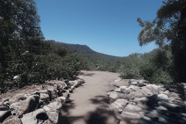 |  |
| Prompts |
| Shutter Speed | 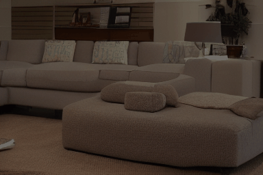 |  |
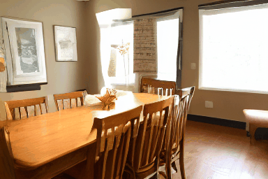 |
| Prompts |
| Color Temp. |  |
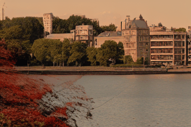 | |
| Prompts |
@article{Yuan_2024_GenPhoto,
title={Generative Photography: Scene-Consistent Camera Control for Realistic Text-to-Image Synthesis},
author={Yuan, Yu and Wang, Xijun and Sheng, Yichen and Chennuri, Prateek and Zhang, Xingguang and Chan, Stanley},
journal={arXiv preprint arXiv: 2412.02168},
year={2024}
}